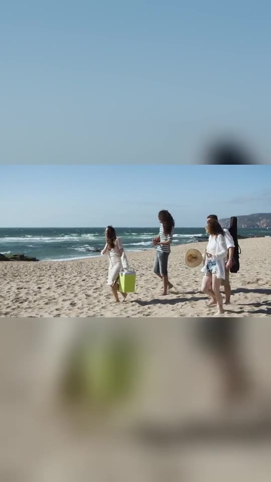
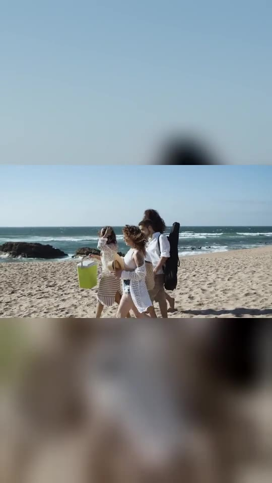

重要与否，由你决定
画面有点晃，也可以是最值得留下的片段。标记它，让它成为这段回忆的重点。
风景很好看，
但你想留下的，可能是一起看风景的人。
选出最舍不得删的片段，说说想记住什么。
让 AI 帮你把零散的旅行素材，串成一段自己的回忆。


画面有点晃，也可以是最值得留下的片段。标记它，让它成为这段回忆的重点。
“想记住和朋友一起看海的下午。”从你想表达的内容开始，而不是从剪辑参数开始。
让海浪声大一点，海景短一点。保留喜欢的部分，每次修改都能撤销。
目标用户是短途旅行后积累了十几到几十段手机视频、希望发一条简短生活记录、但不熟悉时间轴剪辑的人。
假设场景：用户和朋友结束海边一日游，想在睡前发一条 30 秒短片。相册里有很多海景，最想留下的是朋友一起走向海边的 6 秒。她知道自己喜欢这段，却不清楚如何搭配其他片段、安排节奏、处理声音。
场景值得探索的原因：它发生在“已经有素材、也有表达意愿”的时刻。帮助用户跨过最后的组织与修改门槛，有机会让更多素材真正变成被保存、被分享的作品。这是待验证假设，不代表已证明的需求规模。
小影已有一键成片、自动字幕等能力。公开功能介绍只能证明自动剪辑能力已经存在，不能证明用户的个人表达问题已经解决，也不能据此宣称市场空白。查看官方介绍 ↗
本提案探索的核心问题是：用户如何用更小的操作成本，把“对我重要”的线索交给 AI，并在输出偏离意图时有效修正。
一段“必须保留”的素材 + 一句话。减少用户编写长提示词的负担。
看到素材结构，局部修改、可撤销。降低整条重新生成的不确定性。
最可能的失败：用户花时间标记片段、填写一句话，成片却和普通一键成片没有明显区别。另一风险是素材本身不足，或者用户难以说清自己想表达什么。
下一步用同一组素材做对比：自动挑选版与带用户重点的版本，邀请有类似素材的用户实际操作，观察哪一版更愿意保存或分享、原因是什么。当前未进行真实用户访谈与效果实验。
功能案例：CapCut 自动字幕与人工校对。
用户授权由 AI 选择案例，未提供本人使用经历。下文为基于公开功能的典型场景分析，不是提交者的真实经历陈述；正式提交前需由提交者体验、核实个人部分。
典型场景：用户拍了一段介绍旅行见闻的视频，希望观众在静音状态下也能理解内容。手动做字幕，需要逐句输入、反复听录音并调整出现时间。
CapCut 的自动字幕功能可以根据语音生成字幕，之后允许修改文字、时间和样式。功能与地区、版本相关，实际入口以使用时为准。官方功能说明 ↗
值得研究的设计是：AI 生成后，用户仍能直接修改文字和时间。创作门槛降低，判断权仍留在用户手中。
这套机制有效的原因是，用户可以围绕可见结果指出具体问题，无需先掌握全部字幕制作操作。它也给本提案一个启发：输出应该是可修改的草稿，而不是一个只能接受或重做的答案。
改进提案是将可能需要确认的人名、地名、方言词集中呈现，允许结合上下文回听并统一修正。它旨在把人工注意力放在更有价值的位置。
这只是改进方向，尚未通过当前版本的完整实测确认是否已有类似能力；后续应先核查产品现状，再判断是否值得设计。
记录实际使用的工具、能力边界与修改依据。
| 工具 | 实际作用 | 边界 |
|---|---|---|
| Codex | 候选方案、交互设计、页面实现、逻辑测试、文档初稿及复核 | 用户确认选题方向与执行方案；产品假设未经过真实用户研究 |
| 网页检索 | 核对小影、CapCut公开能力和素材许可 | 公开介绍不能替代实际体验和需求验证 |
| FFmpeg / Python | 剪辑示例视频、合成音轨、生成PDF与备用视频 | 制作工具；没有生成真人影像或真实现场声音 |
提交者明确选择生活、旅行记录场景，确认了产品方向、整体流程、网页Demo及GitHub发布方案，并授权选择功能分析案例。具体页面、文案、实现和分析由AI协助提出；提交者仍需在正式提交前审阅并承担最终选择。
初期候选偏向泛化自动剪辑。核对小影已有能力后，聚焦“指定重要片段 + 局部修正”，把个人意图作为验证重点。
最初场景设计涉及朋友的笑声，但获取的视频原素材无声。最终改为“突出海浪声”，加入CC0海浪实录，并注明其为后期配音。
完整示例使用对应MP4；自定义选片则按实际片段播放，并通过浏览器实时导出WebM。文本输入只作意图记录与标题，AI推理过程明确模拟。
用户授权AI选择案例，但未提供个人经历。最终采用带说明的CapCut功能分析，保留提交前核实事项。
没有后台、数据库或真实模型。素材和声音随站点提供；用户输入仅保存在当前浏览器。生成中的识别、组织进度是模拟状态，失败入口用于演示恢复。自定义导出需要支持Canvas和MediaRecorder的现代浏览器。
下载 AI 使用记录 ↓ 查看素材与许可 ↗所有材料围绕同一个产品故事展开。